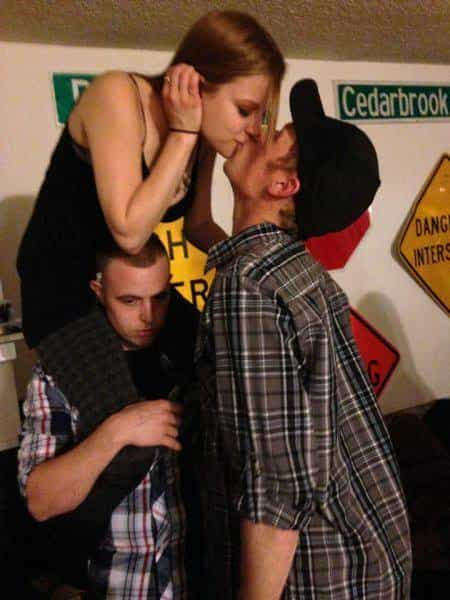
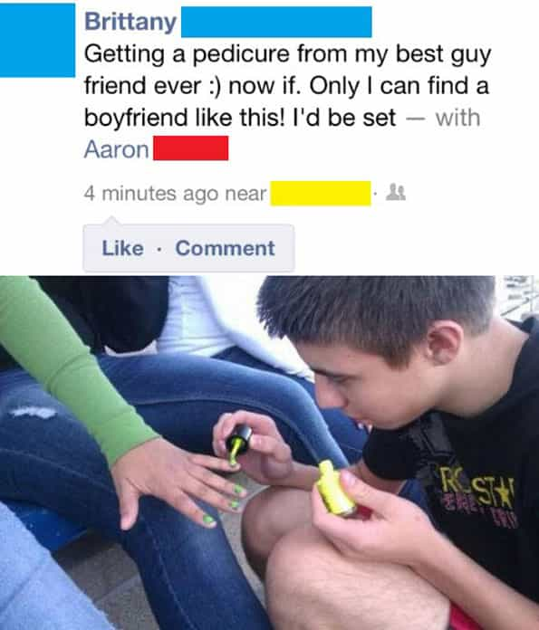
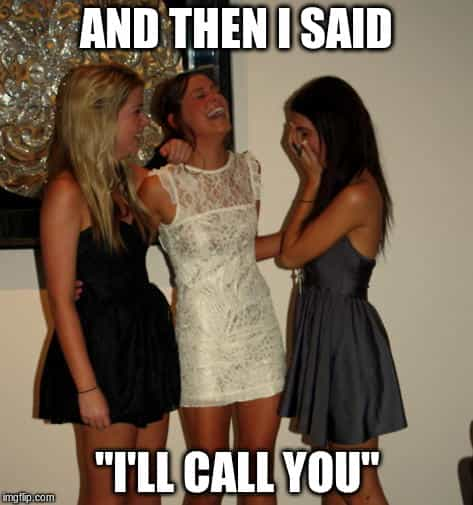

Corey is an iconoclast and the author of 'Man's Fight for Existence'. He believes that the key to life is for men to honour their primal nature. Visit his new website at primalexistence.com


For about a century or more, a systematic androgynization has been taking place in our societies. And one of the major consequences of this transformation is the emergence of friendship between men and women—something that had been quite alien throughout human history. It’s sickening to see so many men today who readily befriend females due to lack of masculine order, groveling and supplicating to feed the already bloated egos of Western women. It’s clear that many men continue to befriend females as a way of receiving whatever little validation they can as a substitute for their lack of love and sex.
If you are one of those men, here are six reasons to reconsider the friendship you have with your special gal.

Being “friends” with girls is a pathetic tactic losers use to lure a chick they have a crush on. The idea is that by being around her for a long enough time and being the “nice guy” who is there for her, she will eventually come to see what a great person he is and reward him with love. This is an extremely ineffective method of attracting a woman that almost always end up with a major heartbreak.
Speaking of which, you need to be clear about your intentions. The sad truth is that most men who befriend women are unaware of their own attraction towards their female friend, and even when they are aware of it, they mistakenly believe that their counterparts feel the same way about them (which they don’t).
So, ask yourself: are you trying to have sex with her or be her pal? The losers may believe that the first step towards forming a romantic relationship with a girl is to be friends with her, but it’s actually sex first. If your female “friend” isn’t about to have sex with you after having known you for a month or more (many men would give even less time), the chances are, she never will and she’s not interested in you.
But maybe I’m being too pessimistic. I’m sure there is still a small chance that your dream girl will eventually fall for you when she turns 34 after being penetrated with mouthful of penises, and is riddled with wrinkles and cellulite—plus sagging breasts to top it all. Maybe then she will be ready to fall in love with how good of a toady provider you are.

Even if you genuinely don’t have any romantic or sexual interest in your female friend, all you’re doing is practicing going in the friendzone for another girl you might be interested in. By being friends with multiple girls for a long enough time, the way you interact with females in general will gradually transform. You will start to act like one of the girls and become infected with supplicating and boyish behaviour that will ruin your masculine frame. It doesn’t always happen and you might be the exception, but it certainly is true for the majority of today’s hapless males who have no idea what they’re doing to themselves.

Women have never failed to disappoint me with their unreliability. If you think lying, flaking, and broken promises are limited to dating, you are horribly mistaken. You have to understand that honor is a foreign concept to women (I’ve actually had two women on two different occasions express disgust when I used that word).
I can’t count how many times I’ve been lied to and stabbed in the back for placing my trust on a female who twisted her words and smiled at me to manipulate me. And like a sucker, I kept believing that not all women were like that and went on to trust the next one who would dupe me the same way. Rinse and repeat.
Simply put, women are worse than worthless as friends; they will actually harm you through their lies and betrayal.
Would you respect a woman who spreads her legs open for any and every man she meets? No, of course not. You might take advantage of the sex she gives out, but you would never consider her a worthwhile companion for the simple fact that she is a slut. As obvious as it may seem, many female-befriending simps can’t seem to grasp the same concept when applied to themselves. If you readily befriend every women you meet and offer services to them without getting anything in return, you’re being a friend-slut.
And as it was with the example of the female slut who offers sex to everyone, women will simply take advantage of all the thankless services the loser friend-slut has to offer without giving anything in return. They might respond with their typical “Awww thanks! :)” to keep you attached, but deep inside, they will have zero respect you. In fact, they’re crossing their fingers in hopes that you don’t have a crush on them.
It’s no secret that women view men as mere objects to be exploited for their own benefit. By being a friend to a woman, you’re simply making it easier for her to take advantage of you. And as a utility, you are to remain loyal and dependable to serve her fickle needs while she goes out at night to have sex with undependable and disloyal bad boys.
As a good boy, you must make sure she’s physically comfortable at all times, listen to all her petty problems by being her emotional tampon, and allow her to walk all over you like a servant would with his master. And if you fail to provide the value she seeks, she is more than willing to throw you out like a used toilet paper. Years of friendship don’t mean anything to females who simply see you as a tool.
Even if you manage to find a unicorn that you’re not sexually or romantically attracted to, is a reliable person, and doesn’t exploit you, why would you bother? What value can a woman possibly bring to you as a friend? Do you actually believe that friendship between men and women should be normalized?
Like a wine that gets mixed with water, the more you spend time mingling with females as their buddies, the more diluted your masculinity becomes. The feminization of men is a true phenomenon and I have no doubt in my mind that inter-sex mingling is both reinforcing and augmenting the problem. I’ve personally witnessed many pathetic men who’ve spent far too much time with girls and have adopted their feminine speech and behaviour. I probably would’ve mistaken them for homosexuals if I didn’t know them any better.
Friendship with females is an aberration and must be shunned by masculine men of today who are cognizant of the realities of modern sex relationship. And as an alternative, I propose a basic system where you limit your interactions with a given woman to a single category without muddling the lines between them. The categories are:
1.Women who you are already in an intimate relationship with.
2. Women who you want to pursue a romantic or sexual relationship with.
3. Women who you must communicate with out of necessity, whether it be co-workers or the cashier at a grocery store.
4. Optional: Dependable and trustworthy women who are able to provide equal or greater value than what you offer her, or has a special value you can’t get from anyone else. A woman of this caliber is rare, and even if you find one, you must tread carefully. I got scalped by at least two women whom I thought deserved to be in this category only to have them talk shit behind my back and throw me under the bus later on. Right now, I only have couple of foreign women in this category. And even then, they’re closer to an acquaintance than a real friend. I personally will never trust another Western woman again.
I used to feel guilty about being so calculating about my relationships and the ROI I get from women, but then I realized that women do the exact same thing with all the men they interact with.

Get male friends, they’re better.
But above all, beyond the debate of whether you should be friends with women or not, the most important thing is to develop friendship with men instead. Yes, the majority of Western men are almost or just as bad as the female counterparts in many cases, but it is your job to find the right ones. Overall, men are more supportive and forgiving, men possess honor and loyalty, and they will hold you up to a standard of masculinity that you cannot deny.
There are many decent people out there for you to be friends with. Just don’t try to make females one of them for all the wrong reasons.
Read More: 5 Reasons I’m Not “Friends” With Girls